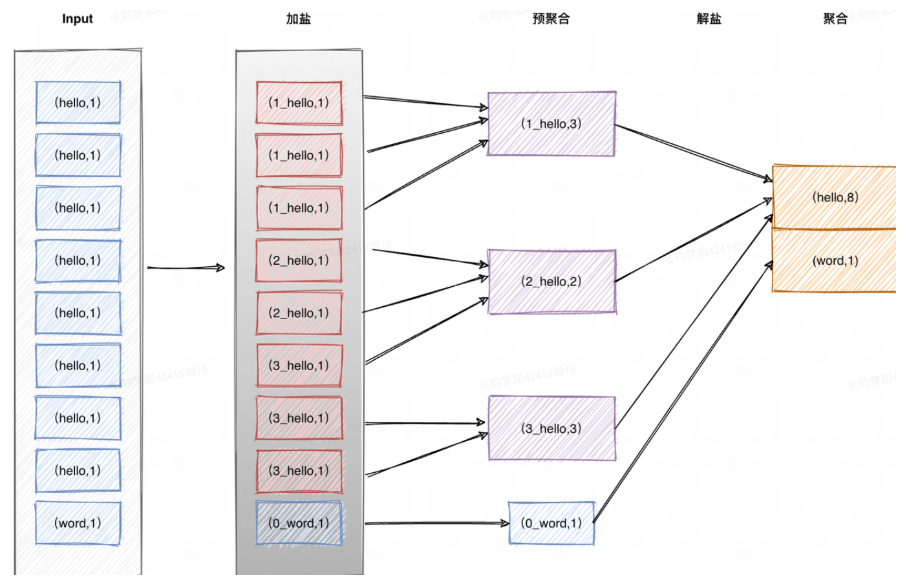

Flink 调优¶
在前期的任务开发阶段，为了快速响应业务需求，我们通常不会针对每个任务进行调优，每次战役期间，我们通常通过临时加队列，加资源，战役前扩并发来应对高峰。扩并发对绝大多数情况是有效的，但在某些情况下也会不起作用，所以我们后来做了一些优化专项来针对 Flink 作业进行优化。
一、问题定位¶
要进行任务的优化首先必须要确定任务的瓶颈在哪。通常可能在三个部分：算子内部，算子间，数据倾斜
作业调优的方向主要可以归结为四大类：是否合理地使用资源、大状态作业的 Checkpoint优化、状态访问性能调优、反压及数据倾斜优化。
逻辑调优（数据倾斜 / 反压 / 关联）¶
- 关联
- 倾斜
数据倾斜 / 反压¶
即某个算子被分配了过多数据消费不过来，如果有 shuffle 操作那么发生反压的算子就会成为整个作业的瓶颈。即使没有 shuffle 也会导致堆积的算子中数据延迟，整体造成更大程度的数据乱序。此时增大并发或算子调优方式都效果有限，最好消除倾斜。
资源配置¶
如果作业整体逻辑没有问题，也没有明显倾斜，也不存在明显算子瓶颈，那么此时加并发是最有效的，比如 10 个并行消费 1000 个 partition，如果此时扩大并发可能效果就非常明显。常用方式：
- 调整并发
- 调整内存
CP 调优¶
非常重要的调优环节，很多作业的问题都是状态引起的，常用方式：
- CP 参数
- 状态访问调优
二、排查思路¶
不考虑如果机器有问题、或者调度造成文件变动异常（h2h、h2m）的场景，考虑联系平台或者具体情况具体分析。
这个排查思路用于应对常见的 Flink 故障报警，比如 CP 连续制作失败、作业频繁重启、数据延迟报警，详细监控指标
思路
检查项
检查内容
解决方案
grafana 看整体作业表现
上游流量
上游数据是否正常，dod 流量是否有明显上涨
如果流量明显上升
CP 制作问题
- CP 对齐时间
- CP 制作时间
- CP 大小
- CP 调优（下文）
- 调整 CP 间隔 GC 情况
网络情况
Flink Web UI 看 subtask 细节
数据倾斜
报错信息
Flink 作业代码
作业逻辑
检查完仍未发现问题
-
-
联系平台进行内存分析
三、调优指南¶
逻辑调优（数据倾斜 / 反压 / 关联）¶
增加 Tair 关联缓存¶
- 原理：关联时引入缓存，命中缓存提升关联效率，减少 Lookup Join 算子耗时。
- 配置：通过配置 Tair 的 join_success_cache_size 成功缓存的条数和 join_success_ttl_second缓存过期时间来调整。观测缓存命中率来调整参数。
- 适用：关联非实时变化的维表，适合更新频率比较低的场景
异步关联¶
- 原理：在与外部系统交互（用数据库中的数据扩充流数据）的时候，需要考虑与外部系统的通信延迟对整个流处理应用的影响。简单地访问外部数据库的数据，比如使用 MapFunction，通常意味着同步交互： MapFunction 向数据库发送一个请求然后一直等待，直到收到响应。在许多情况下，等待占据了函数运行的大部分时间。 异步关联允许同时发送和接受多个请求，均分等待时间，在 Lookup Join 算子是瓶颈的时候，通过异步可以大幅度提升性能

- 适用：当发现 Lookup Join 算子耗时 1 ms 以上就可以尝试开启，如果 QPS 高的情况下会效果明显（40 微秒），作业峰值 QPS 提升可能几倍甚至一个量级
- 参数：
数据倾斜¶
通过flink ui的subtask标签定位，观察各个subtask之间处理数据量（Bytes Received/Sent、Records Received/Sent）是否有较大差距
- source并发：调整source并发=souce kafka topic分区数或倍数（均分 partition）
- Local-Global：Local-Global聚合是为了解决数据倾斜问题提出的，通过将一组聚合拆成两个阶段，首先在上游进行一次本地聚合，然后再进行一次全局聚合，类似于MapReduce中的Combine+Reduce的模式
- 加盐：Shuffle前先对加盐后相同key数据进行预聚合，降低Shuffle过程传输和处理的数据量。
- 解盐：第二阶段的全局聚合会将原本相同的 key 完全聚合

- split-distinct，处理distinct聚合。
- 第一次聚合：使用group key和bucket key进行shuffle，bucket key使用
hash_code(distinct key)%BUCKET_NUM计算，默认1024个桶，可以使用table.optimizer.distinct-agg.split.bucket-num配置。 - 第二次聚合：使用group key聚合，并使用sum计算来自不同bucket的count distinct值。
CP 调优¶
Cp失败的影响：不断重复消费数据
- 消费了半小时的 lag 数据，dev 发现这半小时任务的消费速率慢，达不到预期，想调大任务并行度并重启来提升消费能力。如果 Checkpoint 一直失败，则需要从15min 前的 Checkpoint 恢复，这段时间内消费过的数据会被重复消费，导致资源浪费和业务数据可能重复的风险。
-
当消费 lag 时，如果 tolerable-failed-checkpoints（容忍 CP 失败的次数默认是 0）太低，Flink job 可能进入死循环（消费 lag 导致 job 反压严重，反压严重导致 Checkpoint 超时失败，Checkpoint 失败导致 job 失败，job 失败导致消费更多的 lag），lag 永远不能消费完成。 我们一般认为，正常任务的Checkpoint耗时在秒级完成，甚至是毫秒级完成。如果Checkpoint耗时过长（超过2min），就要考虑任务是否存在稳定性风险？
-
任务可能存在数据倾斜，导致barrier对齐的Checkpoint在barrier对齐阶段花费很长的时间，需要优化任务，解决数据倾斜问题；
- 任务可能存在慢节点导致算子背压高，导致barrier流动慢，需要找到瓶颈算子，优化处理逻辑，或者相应加大并发；
- 当前时刻是否上游数据量陡增，达到作业的处理瓶颈；
-
如果场景可以接受At Least Once语义，考虑使用At Least Once语义替换掉Exactly Once语义；如不能接受，考虑使用非barrier对齐的Exactly Once语义的Checkpoint； 非对齐的checkpoint配置：set
execution.checkpointing.unaligned=true; -
使用非对齐的checkpoint需要注意：对于1.12版本，开启非对齐的ck的作业，更改并发之后，不可使用平台的CK持久化来从CK恢复作业。因为社区在1.12版本上没有实现改并发后的buffer数据回放问题（需要保证同一个key，hash到同一个并发中），所以在1.12版本直接抛了异常，社区在1.13实现了这个功能。https://issues.apache.org/jira/browse/FLINK-17979 短期解决办法：1，通过AB部署启动作业；2，手动触发Savepoint恢复作业。 未来解决办法：升级到Flink1.16，就可以正常通过CK持久化功能正常恢复作业。注意是 At Least Once 语义
状态制作¶
UC¶
- 原理：
- 适用：当 AC 的对齐时间超过 1 分钟，就可以考虑开启 UC
-
配置：execution.checkpointing.unaligned:true 风险：UC 相比 AC 会写 network buffer 到 Checkpoint 中，所以引入了一些额外风险：
-
会写更多的文件到 HDFS，给 NameNode 造成额外压力；（假设一个流处理作业有5个算子，每个算子都有自己的 checkpoint。在 UC 模式下，每个算子都会生成一个 HDFS 文件，总共5个文件。而在 AC 模式下，可能只需要一个文件来保存整个作业的状态。）
- 数据的 schema 升级以后，如果序列化不兼容，则数据无法恢复；（比如加字段后）
- 当算子之间的连接发生变化时，算子之间的 buffer 数据无法恢复（例如：从 rebalance 改为 forward）。
Network buffer¶
- 原理：IO 环节缓存，很重要一点是会影响 barrier 流动，进而影响 CP 制作
- 适用：大数据量、大 CP 场景
- 配置：
- taskmanager.memory.managed.fraction（默认0.1，适当调大）
- taskmanager.memory.network.max（默认1G，需要根据TM内存和上述比例的乘积判断是否超出默认1G大小，如果超出，需要调整）
状态访问¶
mini-batch¶
-
原理：在默认情况下，聚合算子对摄入的每一条数据，都会执行“读取累加器状态→修改状态→写回状态”的操作。如果数据流量很大，状态操作的overhead也会随之增加，影响效率(特别是RocksDB这种序列化成本高的Backend)。开启Mini-Batch之后，摄入的数据会攒在算子内部的buffer中，达到指定的容量或时间阈值后再做聚合逻辑。

-
配置：每个微批内的 key 只写入一次，也会减少下游写压力（比如写 Tair）
上面只开启 mini-batch 是基于 GlobalGroupAggregate 算子来实现，属于全局聚合。还可以开启两阶段聚合来实现 Local-Global 机制优化的结果
- 适用：对于所有有状态访问的作业效果提升都很明显，比如有 group by 和 join 算子的作业。
new-top1¶
在实时作业开发中，为了屏蔽掉上游刷数的影响、并做到数据保序，往往会使用 row_number()，row_number() 在某些特定的情况下会被优化成 Deduplication，例如：
**SELECT** [column_list]
**FROM** (
**SELECT** [column_list],
ROW_NUMBER() OVER ([PARTITION **BY** col1[, col2...]]
**ORDER** **BY** time_attr [**asc**|**desc**]) **AS** rownum
**FROM** table_name)
**WHERE** rownum = 1
当 order by了一个非时间属性的字段，或者rownum > 1时，则被优化成 Rank，Rank 会使用 mapstate 存数据，RocksDB 采用 Seek() 的方式读 mapstate 的数据，效率很低。我们使用row_number() 的绝大部分场景都是 rownum = 1，order by 非时间属性字段，为了优化这个场景，引擎侧引入了 fast-top1，即 new-top1，即使 order by 了非时间字段，也能使用 valuestate 存数据，读 valuestate 的数据，可以使用布隆过滤器进行加速，RocksDB 采用 Get() 的方式读 valuestate 的数据，效率很高。
**set** `table.exec.use-new-top1-func.enable` = true;
**set** `state.backend.rocksdb.use-bloom-filter`= true;
rocksDB 调优¶
RocksDB是基于LSM-Tree的kv存储，写入数据时，先缓存到内存中，批量flush到磁盘上，所以写入效率很高。每次读取数据时，会先从内存中的blockcache中查，如果内存没有命中，则从L0到Ln逐级查磁盘。
写入逻辑：
- 新的数据保存在内存中称为memtable。当memtable达到设定阈值后会变成只读不可变的immutable memtable，只可用做查询，并创建新memtable供写入。两种情况会导致 flush：
- 当memtable和immutable memtable总大小达到设定阈值，会触发flush刷写到磁盘上成为L0层的sst文件。
- CP 被触发时也会导致 flush
- flush 就是将数据组织成有序的文件集，数据写入一个或几个新文件，顺序写入且不能修改，从而将随机读写转化成顺序读写，每一个文件集就是一个level，level之间互相隔离。
-
每个L0 上的sst文件按key排序，当L0的sst文件达到设定阈值（默认4个），会触发compaction将数据去重、压缩并merge join到L1层，L1~LN的触发条件是每个level的总大小。每层的阈值都不一样，越往下阈值越大，更新越不频繁；越往上，文件越新，大小越小。 读取逻辑：
-
每次读取时，先从内存中的memtable、immutable memtable、blockcache查，如果内存没有命中，则从L0到Ln逐级查磁盘。找到后，会将sst文件缓存到blockcache中
- 由于L0层的sst文件是直接由Memtable和Immutable Memtable刷写到磁盘上的，因此L0层的sst文件中有key的重叠，每一次查询都需要遍历所有的L0层文件，但是L1层以及更深层的sst文件是由compaction得到，因此不存在相同key存在于同一层其他sst文件的可能性，并且文件也是有序的，每层只需要访问一个sst文件即可。如果开启了布隆过滤器，在get方式查找数据的时候，可以大大加速查询性能。 建议调整的参数
state.backend.rocksdb.block.blocksize + state.backend.rocksdb.block.cache-size
blocksize默认值是4KB，建议生产环境中调整为16KB～128KB，cache-size默认8MB，建议调整至64MB～256MB。一同调整（如果总内存不调，只调整单块大小，cache 命中率反而可能下降，更多 IO）-
作用：总数据量不变的情况下，单词读取数据量变多，单 block 数据变多，索引占用降低
state.backend.rocksdb.write-batch-size -
调整触发flush的阈值，减少刷写次数，从而提升写性能。
- 默认2MB，建议调整至8MB。
资源调优¶
调整并发¶
开发完成一个Flink作业后，首先将任务并行度设置一个较小的水平，比如2/4个并发，然后通过回溯数据的方式积压一批数据，启动Flink任务，让任务处于背压高的状态，即达到当前并发的最大的处理能力，这时候可以得到该作业的单并行度的最大处理能力，并基于此计算出作业的最小并行度配置 = 上游近3～7日的高峰（qps）/单并行度最大处理能力（qps）。
- source 端并发：建议与 kafka source partition 数量保持 1 : 1；如果 kafka source 的并发太大了，source 端并发也可以配置小一些，一个并行度消费多个 partition，但注意不要多，会造成资源浪费
- tranform 并发：一般瓶颈都在 transform 端，如果逻辑复杂，可以适当增加并行度（）
- sink 端并发：一般sink端的并行度是 kafka sink partition 数；同理如果太多可以适当降低并行度；如果出现 sink 算子处理性能不足，可以考虑扩展 kafka sink partition 增大消费能力，但也要考虑下游的影响。
Flink 内存调优（重点）¶
案例：https://cloud.tencent.com/developer/article/1884177
子项
flink-1.12
描述
备注
taskmanager.heap.size/taskmanager.memory.process.size
2G
总进程内存
taskmanager.memory.flink.size
1587.2M
flink内存
总进程内存（2gb）- jvm metaspace（256mb） - jvm overhead（204.8mb）
JVM heap -xmx/xms
665.6M
JVM 堆内存
taskmanager.memory.framework.heap.size
128M
框架堆内存：用于 Flink 框架的 JVM 堆内存（进阶配置）
堆内，堆外均有，即TM本身所占用的内存，不计入Slot的资源。
taskmanager.memory.task.heap.size
537.6M
task内存：用于 Flink 应用的算子及用户代码的 JVM 堆内存。
由Flink内存扣除掉其他部分的内存得到。1587.2mb-128mb-634.88mb-158.72mb-128mb
Managed Memory
634.88M
托管内存：由 Flink 管理的用于排序、哈希表、缓存中间结果及 RocksDB State Backend 的本地内存。
taskmanager.memory.managed.fraction=0.4 taskmanager.memory.managed.size=none（即不显式指定该参数，默认使用fraction计算）规则：flink内存fraction（1587.2mb0.4）
-XX:MaxDirectMemorySize
286.72M
直接内存
Networks buffers/Network
158.72M
网络buffers flink 内部shuffle：用于任务之间数据传输的直接内存（例如网络传输缓冲）。该内存部分为基于 Flink 总内存的受限的等比内存部分。
网络数据传输所使用的内存（属于堆外内存的直接内存）taskmanager.memory.network.fraction=0.1 taskmanager.memory.network.min=64mb taskmanager.memory.network.max=1gb规则：flink内存fraction（1587.2mb0.1），如果小于配置内存的min（64mb），则使用min大小（64mb）；如果大于配置的max（1gb），则使用max大小（1gb）。
taskmanager.memory.task.off-heap.size
0
task 堆外：用于 Flink 应用的算子及用户代码的堆外内存（直接内存或本地内存）。
默认不使用堆外内存。
taskmanager.memory.framework.off-heap.size
128M
框架堆外：用于 Flink 框架的堆外内存（直接内存或本地内存）（进阶配置）。
堆内，堆外均有，即TM本身所占用的内存，不计入Slot的资源。
taskmanager.memory.jvm-metaspace.size
256M
metaspace 类元信息：Flink JVM 进程的 Metaspace。jvm加载的类的元数据，加载的类越多，需要的空间越大
taskmanager.memory.jvm-overhead.size
204.8M
flink1.12预留用于其他 JVM 开销的本地内存，例如栈空间、垃圾回收空间、native memory、code cache、thread stack等。该内存部分为基于进程总内存的受限的等比内存部分。
taskmanager.memory.jvm-overhead.fraction=0.1 taskmanager.memory.jvm-overhead.min=192mb taskmanager.memory.jvm-overhead.max=1gb规则：总进程内存fraction（2gb0.1），如果小于配置的min（192mb），则使用min大小（192mb）；如果大于配置的max（1gb），则使用max大小（1gb）。
补充：看火焰图来看任务的运行情况
其他技巧¶
Hash Lookup Join（数平实现）¶
实时数据开发在加工宽表时，往往会通过 Lookup Join 的方式去关联一些维表，维表主要的存储介质是 Tair，为了避免频繁地访问外部存储，作业中一般会引入缓存队列，但是缓存队列不能无限大。所以，针对一些动辄百万级、千万级数据量的维表 Lookup Join，缓存命中率会比较低。
Hash Lookup Join 的方式，让实时流在进行 Lookup Join 前自动做一次 keyby hash，确保 hash 分组之后实时流中相同 key 的数据会在同一个 subtask 中处理，在任务处理消息量相同的情况下这样就缩小单个 container 上处理 Key 的数量，提高缓存命中率，减少访问外部存储频次。
使用 SQL Hint 的方式可以对相同 key 进行提前聚合，提升缓存命中率
方式一：自动推断
SELECT /*+ SHUFFLE_HASH('dim_table'='a') */ *
FROM left_table l
LEFT JOIN dim_table FOR SYSTEM_TIME AS OF l.process_time AS d ON l.did=d.id
方式二：指定字段
SELECT /*+ SHUFFLE_HASH('dim_table'='a,b') */ *
FROM left_table l
LEFT JOIN dim_table FOR SYSTEM_TIME AS OF l.process_time AS d ON l.did=d.id
效果：缓存命中率从原来 1%提升至 99%，单条消息处理耗时从 1ms 降至 50 μs，数据回溯时长 10h 降低至 10min
4.2 Binlog 采集方式（数平实现）¶
也不是通用方式，但是可以作为特殊场景的解决方案。
binlog 采集的都是整个库的 binlog，默认按照 table_name 进行 hash，但如果某个核心表数据量特别特别大，就会导致 partition 倾斜；因此在采集 binlog 的时候就按照 user_id hash 直接 hash 来避免 partition 之间不均衡
四、调优案例¶
背景：topic-用户流量，记录用户最后一次访问/浏览的信息（可以融入定价系统一起讲，视为 SLA 的数据）
现象：
- 线上作业一直延迟，发现 cp 制作失败，但 cp 也不大，整体制作时间较长达到 10min，更细化来看 3min 对齐，7min制作
- ratelimiter和deserlialize算子的耗时非常长，判断可能在读写状态时有问题，ratelimiter算子耗时增加的原因是下游反压，deserialize一样也会增加耗时，原因是反序列化性能不够，所以这个表现不是问题出现的原因，而是表现的结果 调优方式：
**开启非对齐 + 增加network buffer + 调整Rocksdb参数**
execution.checkpointing.unaligned:true
taskmanager.memory.network.fraction:0.25
taskmanager.memory.managed.fraction:0.6
state.backend.rocksdb.block.blocksize:128 kb
state.backend.rocksdb.block.cache-size:256 mb
state.backend.rocksdb.write-batch-size:8 mb
优化后，峰值吞吐 40k - 90k，对齐时间 3min - 1s（）